MyBox User Guide – Overview v6.7
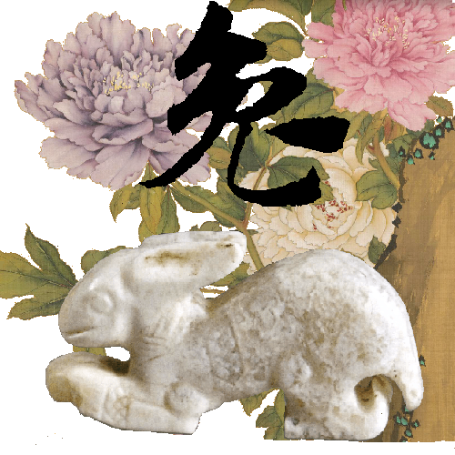
MyBox: Easy Tools Set
User Guide - Overview
Author: Mara
Version: 6.7
Date: 2023-1-21
Contents
1 Introduction 3
1.1 What's New 4
1.2 Cross Platforms 4
1.3 Personal 4
1.4 Data Compatible 4
1.5 Internationalized 4
2 Resources Addresses 6
3 Documents 7
4 Download and Execution 8
4.1 Source Codes 8
4.2 Self-contain packages 8
4.3 Jar 8
4.4 Other addresses to download 8
4.5 Limitation 9
4.6 Migration 9
4.7 Configuration 9
5 Implementation 10
6 Common Functions in Interfaces 12
6.1 Main Interface 12
6.2 Interface Layout 13
6.3 Set Font Size 13
6.4 Open New Stage 14
6.5 Restore Scene Size 14
6.6 Recent Visited Files/Directories 14
6.7 Data Table 15
6.8 Context Menu 16
6.9 Window “Examples” 17
6.10 Window “Histories” 18
6.11 Color Block and Palette 18
7 Settings 19
7.1 Interface 20
7.2 Base 21
7.3 Data 21
7.4 PDF 22
7.5 Image 22
7.6 Map 23
8 Window 24
9 Shortcuts 25
This is desktop application based on JavaFx to provide simple and easy functions. It's free and open sources.
2023-1-21 v6.7
Added features:
Group data by same values of century/year/month/day/hour/minute/second of a time column.
Group data by same results of row expressions.
Charset can be set for “Run System Command”.
Document “Stories of Images”.
Improve codes:
Grouping parameters are saved in database instead of in memory.
In data formats, hour/minute/second are always long values.
Rename internal images.
Solved problems:
When group by value ranges of time column, ranges should be displayed as time rather than as long.
When group by conditions, all values should be imported in temprory table, or else results may be wrong.
When group by rows number, split number is wrongly picked as split size.
Closed requirements/bugs in this version
Happy and healthy Chinese New Year!
MyBox is
implemented in pure Java and only based on open sources, and it can
run on platforms which support Java 18.
Versions before v5.3 are
based on Java 8.
No register/login/DataCenter/Cloud.
No network if unnecessary.
Not read/write if unnecessary.
Exported data are in common text formats, like txt/csv/xml/json/html.
Imported data are in common text format, like txt/csv.
At least one exported format can be imported.
Imported data are self-contain, that original data can be rebuilt without extra data.
All codes of MyBox are internationalized. Language can be switched in time.
Each langauge is defined in one resource files, like: "Messages_NAME.properties".
Support
adding new languages online. Table is provided with English as
comparison. New langauges take effects at once.
Example, the new
language is named as “aa”, and its resource files are
Messages_aa.properties.
Translated languages can be shared with others: Put the files under "mybox_languages" of data path and MyBox is aware of them immediately.
Embed
Chinese and English, whose files are under path
MyBox/src/main/resources/bundles/.
|
Language |
Resource file of interface |
|---|---|
|
Chinese |
Messages_zh_CN.properties |
|
English |
Messages_en.properties |
|
Contents |
Link |
|---|---|
|
Project Main Page |
|
|
Source Codes and Compiled Packages |
|
|
Submit Software Requirements and Problem Reports |
|
|
Data |
|
|
Documents |
|
|
Mirror Site |
|
|
Cloud Storage |
https://pan.baidu.com/s/1fWMRzym_jh075OCX0D8y8A#list/path=%2F |

|
Name |
Version |
Time |
English |
Chinese |
|---|---|---|---|---|
|
Development Logs |
6.7 |
2023-1-21 |
||
|
Shortcuts |
6.5.6 |
2022-6-11 |
||
|
Functions list |
6.6.2 |
2022-11-30 |
||
|
Packing Steps |
6.3.3 |
2020-9-27 |
||
|
Development Guide |
2.1 |
2020-8-27 |
||
|
User Guide - Overview |
6.7 |
2023-1-21 |
||
|
User Guide - Data Tools |
6.7 |
2023-1-21 |
||
|
User Guide - Document Tools |
6.7 |
2023-1-21 |
||
|
User Guide - Image Tools |
6.7 |
2023-1-21 |
||
|
User Guide - File Tools |
6.7 |
2023-1-21 |
||
|
User Guide - Network Tools |
6.7 |
2023-1-21 |
||
|
User Guide - Media Tools |
6.7 |
2023-1-21 |
||
|
User Guide - Development Tools |
6.7 |
2023-1-21 |
||
|
Examples - Notes |
6.6.1 |
2022-11-16 |
||
|
Examples - Information in Tree |
6.6.1 |
2022-11-16 |
||
|
Examples - Favorite Address |
6.6.1 |
2022-11-16 |
||
|
Examples - SQL |
6.6.1 |
2022-11-16 |
||
|
Examples - JShell |
6.6.1 |
2022-11-16 |
||
|
Examples - JEXL |
6.6.1 |
2022-11-16 |
||
|
Examples - JavaScript |
6.6.1 |
2022-11-16 |
||
|
Examples - Math Function |
6.6.1 |
2022-11-16 |
||
|
Examples - Row Filter |
6.6.1 |
2022-11-16 |
||
|
About - Color |
6.6.1 |
2022-11-16 |
||
|
About - Coordinate System |
6.6.1 |
2022-11-16 |
||
|
About - Media |
6.6.1 |
2022-11-16 |
||
|
About - Data Analysis |
6.6.1 |
2022-11-16 |
||
|
Palette - Common Web Colors |
6.7 |
2023-1-21 |
||
|
Palette - Chinese Traditional Colors |
6.7 |
2023-1-21 |
||
|
Palette - Japanese Traditional Colors |
6.7 |
2023-1-21 |
||
|
Palette - Colors from colorhexa.com |
6.7 |
2023-1-21 |
||
|
Palette - MyBox Colors |
6.7 |
2023-1-21 |
||
|
Stories of Images |
6.7 |
2023-1-21 |
Packages
of each version have been uploaded at Releases
directory now. You can find them by clicking releases
tab in main page of this project.
MyBox-6.7-src.zip 58MB-
About structure, editing, and building of source codes, please refer to Developement Guide and Packing Steps
Self-contain packages include all files and need not java env nor installation.
|
Platform |
Link |
Size |
Launcher |
|---|---|---|---|
|
win10 x64 |
260MB- |
MyBox.exe |
|
|
CentOS 7 x64 |
280MB- |
bin/MyBox |
|
|
mac |
280MB- |
MyBox-6.6.2.app |
User can double click the launcher to start MyBox or run it by command line. The default “Open Method” of image/text/PDF files can be associated to MyBox and a file can be opened directly by MyBox by double clicking the file’s name.
When JRE or JDK(Oracle jdk or open jdk) is installed, jar can run:
|
Platform |
Link |
Size |
Requirements |
|---|---|---|---|
|
win |
190MB- |
Java 18 or higher |
|
|
linux |
200MB- |
Java 18 or higher |
|
|
mac |
200MB- |
Java 18 or higher |
Run following command to launch this program with Jar package:
java -jar MyBox-6.7.jar
A file path can follow the command as argument to be opened directly by MyBox. Example, following command will open the image:
java -jar MyBox-6.7.jar /tmp/a1.jpg
Download
from cloud storage:
https://pan.baidu.com/s/1fWMRzym_jh075OCX0D8y8A#list/path=%2F
Download
from sourceforge: https://sourceforge.net/projects/mara-mybox/files/
Without enough testings, MyBox has low reliability. Data damage even happened in some versions.
New functions being added and codes being improved continually, MyBox has bad stability. Unexpected function failures happened sometimes.
MyBox windows may often be blocked when some Input Method is running. Workaround is to disable/uninstall this Input Method.
Each version has itself’s configuration file. New version can copy parameters from existed versions.
Data handled in each version are under “Data Directory” referred by it. Multiple versions can refer to same data directory.
MyBox is backward compatibility: Later version can work on data of previous versions. While forward compatibility is not supported: Wrong may happen when old version handles data of new version.
Configuration file is under “User Home”:
|
Platform |
Path of MyBox Configuration File |
|---|---|
|
win |
|
|
linux |
|
|
mac |
|
Add
parameter “config="FilePath"” when run jar to change
configuration file temporarily.
Function “Settings” can be
used to change configuration values.
MyBox is based on following open sources:
|
Name |
Role |
Link |
|---|---|---|
|
JDK |
Java |
|
|
https://www.oracle.com/technetwork/java/javase/downloads/index.html |
||
|
https://docs.oracle.com/en/java/javase/18/docs/api/index.html |
||
|
JavaFx |
GUI |
|
|
Derby |
Database |
|
|
NetBeans |
IDE |
|
|
jpackage |
pack |
https://docs.oracle.com/en/java/javase/18/docs/specs/man/jpackage.html |
|
maven |
build |
|
|
jai-imageio |
Image manufacture |
|
|
PDFBox |
PDF manufacture |
|
|
PDF2DOM |
PDF to html |
|
|
GifDecoder |
Decode broken gif |
|
|
EncodingDetect |
Determine encoding of text file |
|
|
Lindbloom |
Color theory |
|
|
Free Icons |
Icon |
|
|
tess4j |
OCR |
|
|
tesseract |
OCR |
|
|
barcode4j |
Create barcodes |
|
|
zxing |
Create/Decode barcodes |
|
|
flexmark-java |
Convert Markdown |
|
|
commons-compress |
archive/compress |
|
|
XZ for Java |
archive/compress |
|
|
ffmpeg |
convert/create medias |
|
|
image4j |
ico format |
|
|
AutoCommitCell |
Submit updates |
|
|
GaoDe |
Map |
|
|
GaoDe |
Coordinate |
|
|
|
Image materials |
https://weibo.com/3876734080/InmB1aPiL?type=comment#_rnd1582211299665 |
|
poi |
Microsoft Documents |
|
|
LabeledBarChart |
Javafx charts |
|
|
commons-csv |
CSV |
|
|
geonames |
Location data |
|
|
world-area |
Location data |
|
|
China National Bureau of Statistics |
Data |
|
|
JHU |
COVID-19 data |
|
|
Website |
Color data |
|
|
Book |
Materials |
|
|
National Geomatics Center of China |
Map |
|
|
movebank |
Location data |
|
|
CoordinateConverter |
convert coordinates |
|
|
JavaMail |
|
|
|
Commons IO |
File IO |
|
|
colorhexa |
Color data |
|
|
WQY |
Font file |
|
|
ttc2ttf |
Extract ttf |
|
|
sfds |
Handwriting |
|
|
Book |
Materials |
|
|
PaginatedPdfTable |
|
|
|
jsoup |
DOM |
|
|
ZhiHu |
Materials |
|
|
commons-math |
Calculation |
|
|
JEXL |
Calculation |
|
|
OpenOffice |
Document |
|
|
nashorn |
JavaScript |
|
|
echarts-gl |
WebGL |
Main interface is shown after MyBox is launched. Move mouse over one icon to pop its menu. Then select a tool to start.
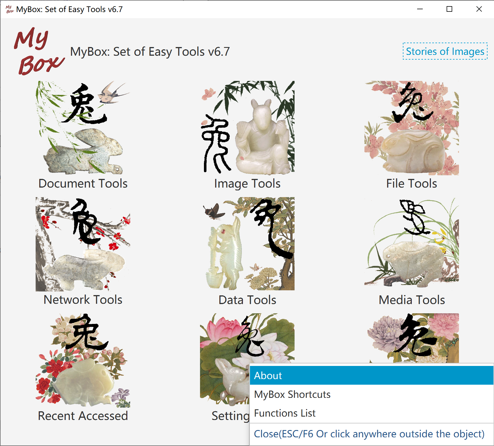
Window title includes the object name being handled.
Main menu in top to open windows of functions.
Some interfaces include pagination toolbar which is generally in bottom.
Some interface include icon Fish. Hover mouse upon it to pop tips.
Some interfaces include left pane or right pane. If icon Rosefinch is there, hover mouse upon it to hide/show the pane.
To some buttons, checkbox, or icon, shortcut or tips will be popped when hover mouse upon them.
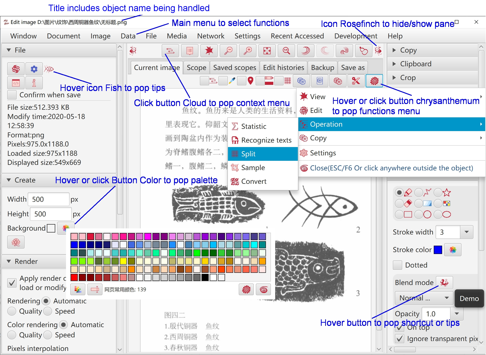
Decrease font size by press key “CTRL” and key “-” at same time.
Increase font size by press key “CTRL” and key “=” at same time.
Select one font size of 12px, 15px, and17px by click menu item directly.
Set font size in Setting window.
To open new window for new scene and keep current scene in current window, do not select menu item “Settings”-“Close current window when open new tool”.
By selecting menu item “Settings”-“Record size and location of windows”, recent size and location of each stage will be saved and restored when it is opened again.
When menu item “Settings”-“Pop recent visited files/directories” is selected, each access of files/directories will be record and list will be popped when mouse is moved upon the button of selection. Example:
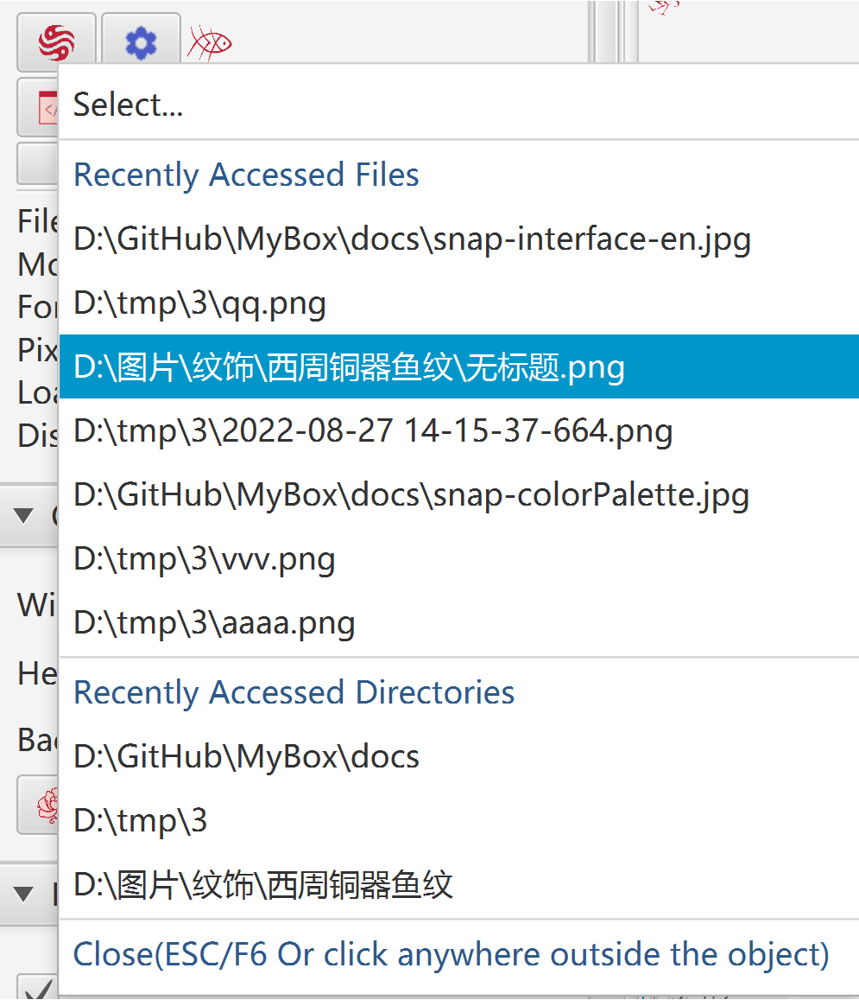
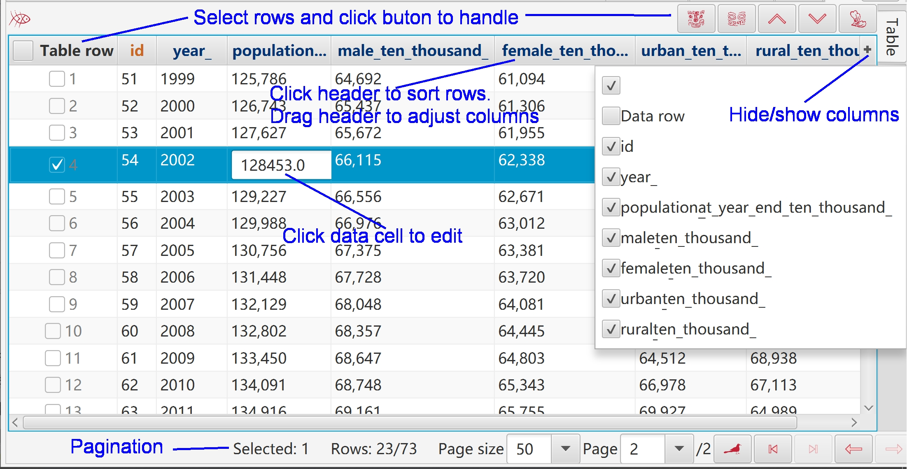
To select rows:
Press key SHIFT and click rows to select multiple rows of a range.
Press key CTRL and click rows to select multiple rows one by one.
Click the checkboxs in head of rows.
To edit data:
Header texts of editable columns are in blue (Editable primary keys are still in red).
Click the editable cell, then its input field will be shown.
When editable cell loses focus, its value will be checked and invalid data will be rejected.
To display/hide columns, click button "+" in right side of table header.
This operation does not affect data.
To adjust order of columns, click and drag column headers.
This operation does not affect data.
- To order rows:
Click column header for ascending order by this column.
Click column header again for descending order by this column.
Click column header for thrid time to cancel ordering of this column.
Press SHIFT and click more column headers to order by multiple columns.
This operation only affect current data in table.
Header texts of primary keys are in red and auto-increated keys are in orange.
This menu is popped when right click object like text, image, or table.
If interface includes button “Cloud”, context menu will be popped when click this button.
If interface includes checkbox “Cloud”:
If this checkbox is not selected, the context menu is not popped when right click object.
If this checkbox is selected, the context menu is popped when right click object.
Checkbox “Cloud” does not affect button “Cloud”, which means context menu is always popped when click button “Cloud”.
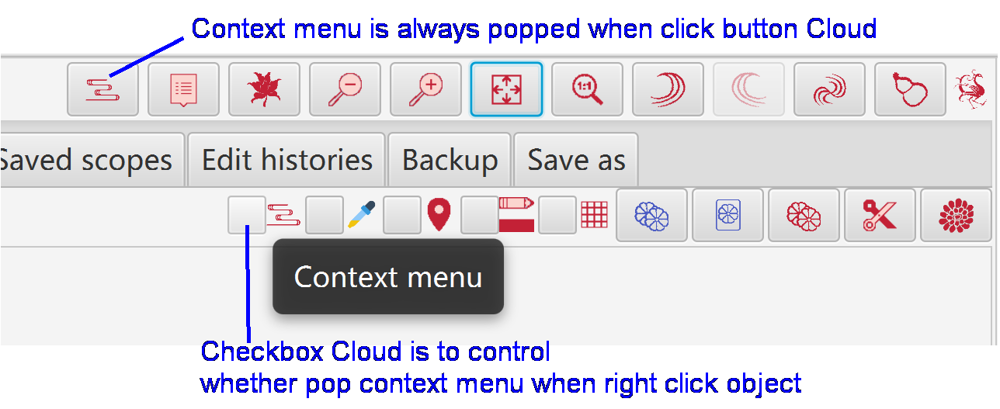
Window “Examples” is popped when hover or click button “Examples”.
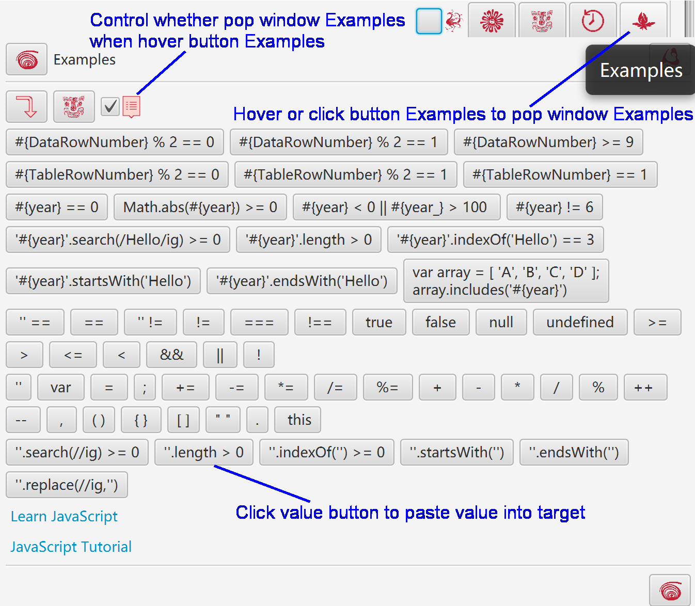
Hover or click button “Histories” to pop window “Histories”.
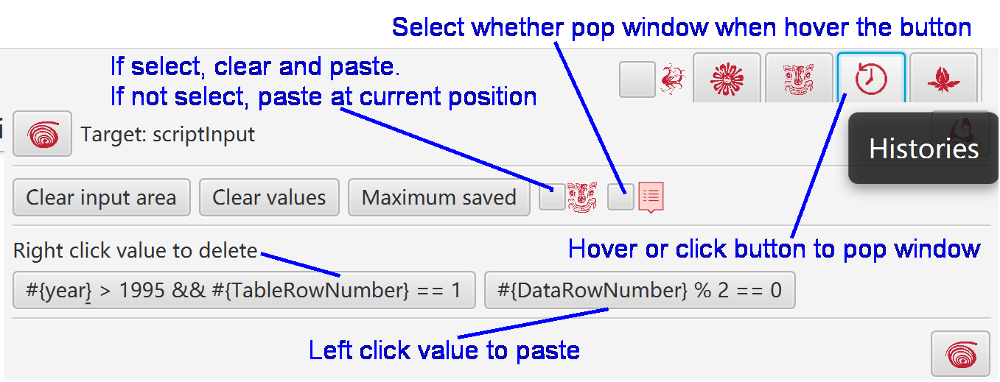
Hover “Color Block” to pop color's information.
Hover or click button “Palette” to pop window Palette, and select or edit colors.
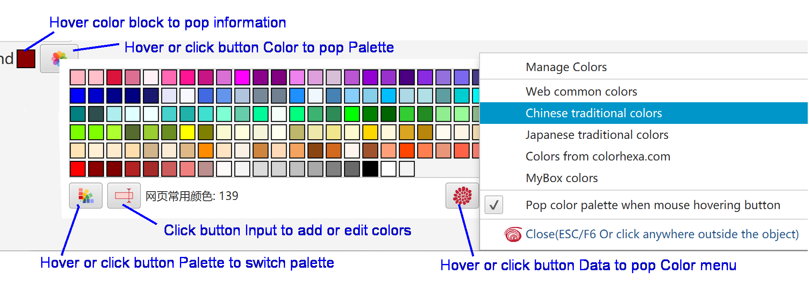
Select “Settings...”in main menu to open window Settings.
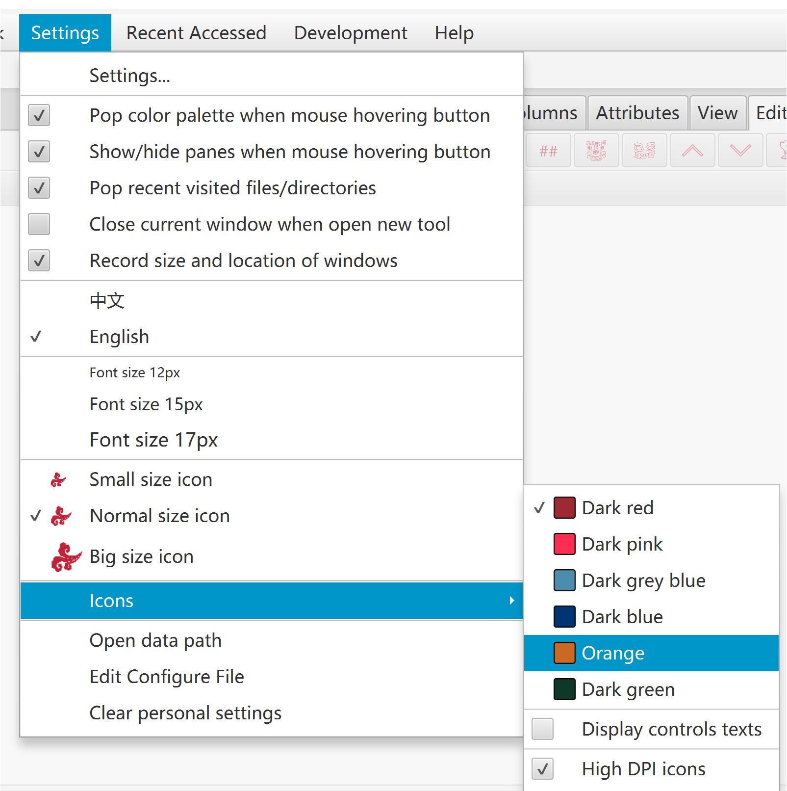
Language, font size, icon size
Control color, whether display control text, interface style
Select hi-dpi icons(100x100) or common icons(40x40).
When screen resolution is not high than 120dpi, suggest to use common icons.
Hi-dpi icons may look blurred on low-resolution screen.
Whether restore last size of each scene.
Whether open new stage to display scene.
Whether show/Hide splitted panes when mouse passing.
Whether pop stage "Set Color" when mouse passing.
Font size, color, duration of popped messages.
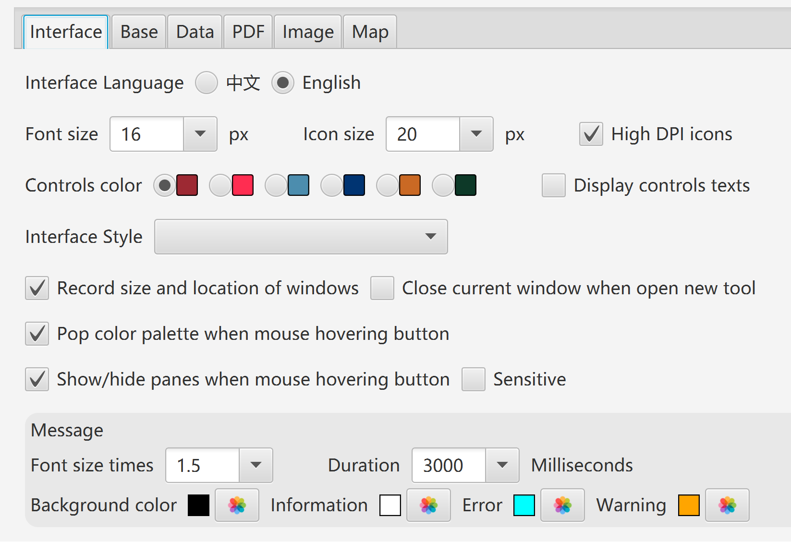
Maximum memory usage of JVM
Network timeouts
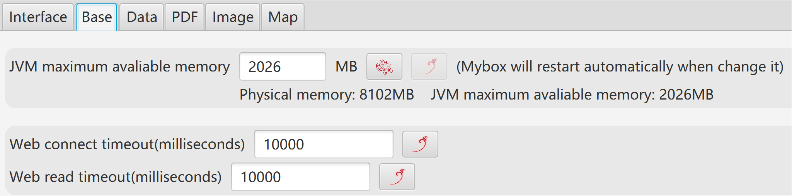
Data path
Derby driver mode and batch size.
Whether pop recent visited files/directories. And the number.
Whether close alarm clocks when exit program.
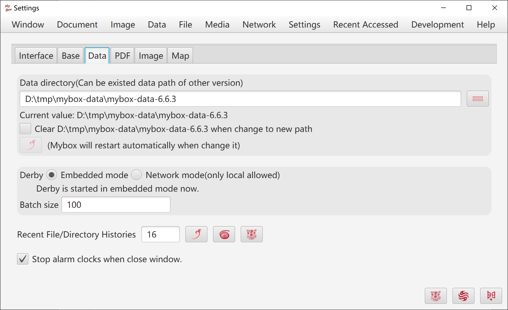
Maximum main memory of PDF handling.
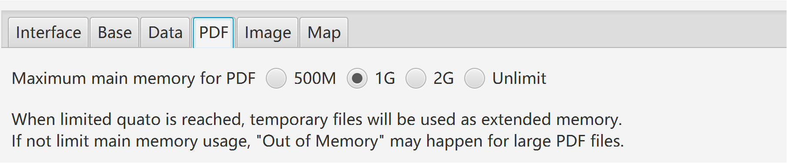
Width and color of stroke and anchor. Whether anchors are solid.
Color to replace Alpha when Alpha is not supported. (Suggest as White)
Wdith of thumbnail
Maximum width to display sampled images
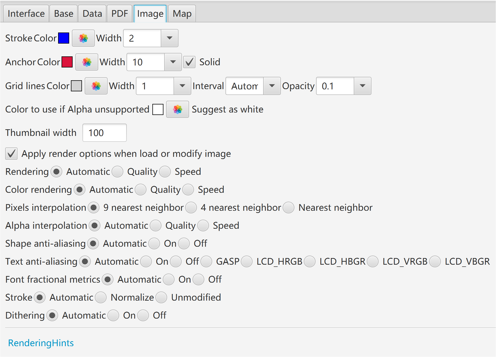
Data keys of map
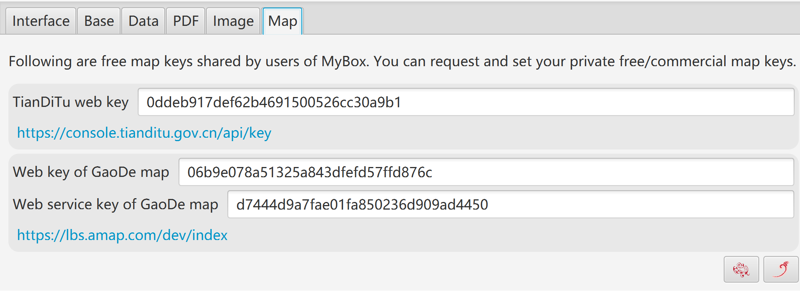
Refresh/Reset/Full-screen/Top windows.
Close other windows.
Reboot MyBox.
Recent visited tools.
Snapshot of window/pane.
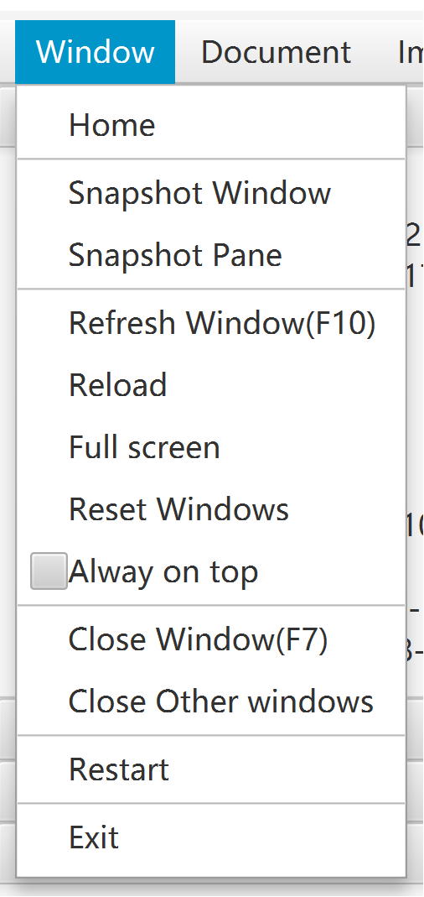
Controls in interfaces, like buttons, checkboxs, images, may have their shortcuts:
When focus is in "Text Input" control, following keys work for this control:
Delete/Home/End/PageUp/PageDown/Enter/Ctrl-c/v/z/y/x
Or else shortcuts work for the interface.
When focus is not in "Text Input" control, Ctrl/Alt of combination keys can be omitted.
Example, if an image is currently foused, press "c" to copy and press "2" to set as pane size.
Move mouse upon control, its tooltip(if has) including shortcut may be popped.
|
Function key |
Action |
Possible alternative |
|---|---|---|
|
F1 |
Start / OK / Synchronize / Set / Query |
CTRL+e / ALT+e, CTRL+q / ALT+q |
|
F2 |
Save |
CTRL+s / ALT+s |
|
F3 |
Recover / Export |
CTRL+r / ALT+r, CTRL+e / ALT+e |
|
F4 |
Show/Hide left pane |
|
|
F5 |
Show/Hide right pane |
|
|
F6 |
Close Popup |
|
|
F7 |
Close Stage |
|
|
F8 |
Refresh Stage |
|
|
F10 |
Synchronize |
|
|
F11 |
Save as |
CTRL+b / ALT+b |
|
F12 |
Menu |
|
|
DELETE |
Delete |
CTRL+d / ALT+d |
|
PAGE_UP |
Previous |
ALT+PAGE_UP |
|
PAGE_DOWN |
Next |
ALT+PAGE_DOWN |
|
HOME |
First |
ALT+HOME |
|
END |
Last |
ALT+END |
|
ESCAPE |
Cancel / Withdraw |
CTRL+w / ALT+w |
|
CTRL+e |
Start /OK / Set / Export |
F1 / ALT+e |
|
CTRL+c |
Copy |
ALT+c |
|
CTRL+v |
Paste |
ALT+v |
|
CTRL+z |
Undo |
ALT+z |
|
CTRL+y |
Redo |
ALT+y |
|
CTRL+d |
Delete |
DELETE / ALT+d |
|
CTRL+x |
Crop |
ALT+x |
|
CTRL+s |
Save |
F2 / ALT+s |
|
CTRL+b |
Save as |
F11 / ALT+b |
|
CTRL+f |
Find |
ALT+f |
|
CTRL+h |
Replace / Copy html |
ALT+h |
|
CTRL+r |
Recover / Clear |
ALT+r |
|
CTRL+n |
Create |
|
|
CTRL+a |
Select all |
ALT+a |
|
CTRL+o |
Select none |
ALT+o |
|
CTRL+u |
Select |
ALT+u |
|
CTRL+g |
Clear |
ALT+g |
|
CTRL+w |
Cancel / Withdraw / Replace all |
ESCAPE |
|
CTRL+p |
Pop |
ALT+p |
|
CTRL+q |
Query |
ALT+q |
|
CTRL+k |
Pick color |
ALT+k |
|
CTRL+t |
Select area / Copy text |
ALT+t |
|
CTRL+m |
MyBox Clipboard |
ALT+m |
|
CTRL+j |
System Clipboard |
ALT+j |
|
CTRL+1 |
Original size / Previous |
|
|
CTRL+2 |
Pane size / Next |
|
|
CTRL+3 |
Zoom in |
|
|
CTRL+4 |
Zoom out |
|
|
CTRL+- |
Decrease font size |
|
|
CTRL+= |
Increase font size |
|
|
ALT+1 |
Set / Previous |
F1 |
|
ALT+2 |
Increase / Next |
|
|
ALT+3 |
Decrease |
|
|
ALT+4 |
Filter |
|
|
ALT+5 |
Invert |
|
|
ALT+PAGE_UP |
Previous |
PAGE_UP |
|
ALT+PAGE_DOWN |
Next |
PAGE_DOWN |
|
ALT+HOME |
First |
HOME |
|
ALT+END |
Last |
END |
|
s / S |
Play / Pause |
|
|
q / Q |
Stop |
|
|
m / M |
Mute / Sound |
|
|
f / F |
Full screen |
<End of Document>
Page